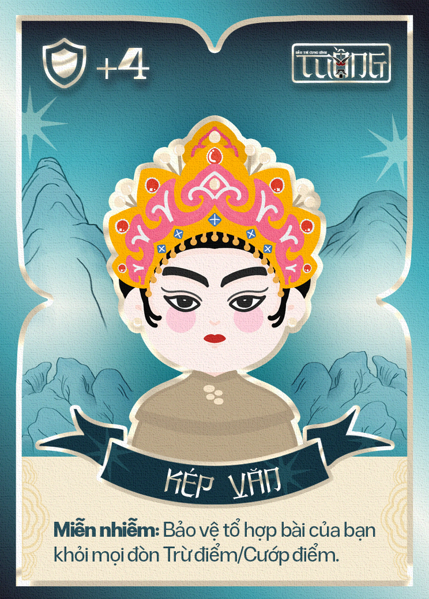
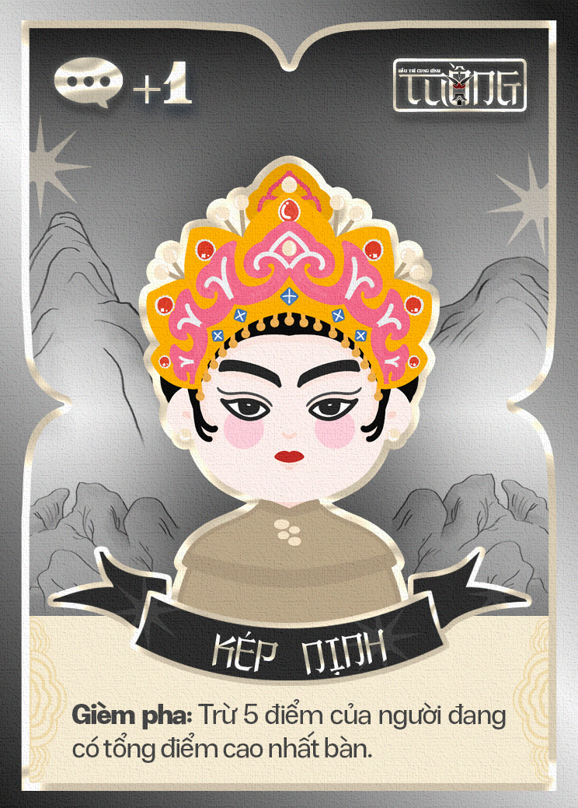
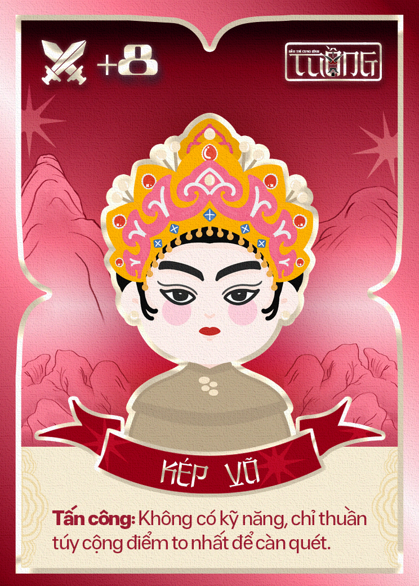
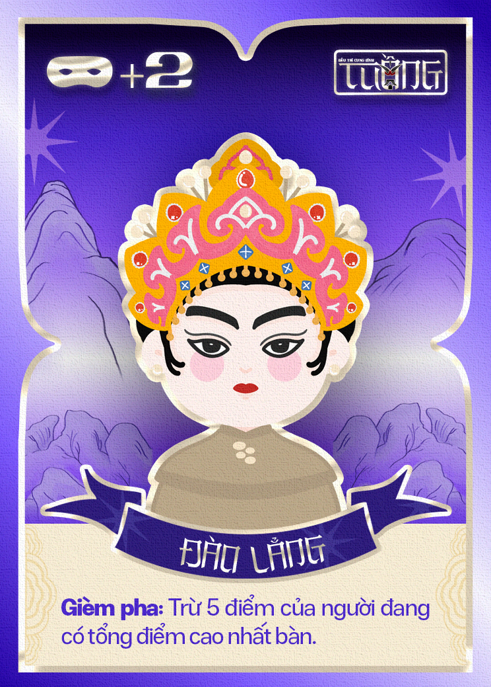
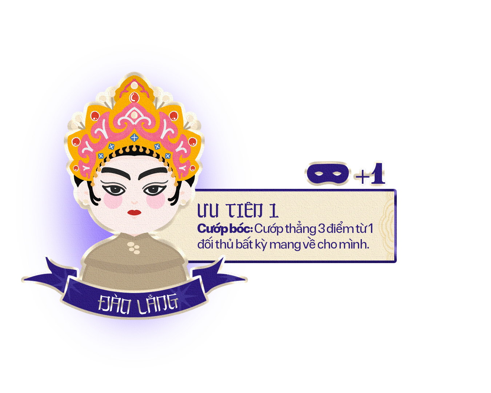

.png)
.png)
.png)
.png)
.png)
.png)
.png)
.png)
Hát Bội: Nghệ Thuật Kể Chuyện
Tuồng - Đấu Trí Cung Đình là boardgame đấu trí lấy cảm hứng từ nghệ thuật Hát Bội Việt Nam. Người chơi hóa thân thành các tuyến nhân vật kinh điển, sử dụng chiến thuật, phán đoán và những màn lật kèo bất ngờ để giành lấy Ân Sủng trên sân khấu cung đình.




Ma Trận Nhân Vật

1. Kép Văn
Bậc quân sư điềm tĩnh
Kích hoạt sớm nhất để bảo vệ bản thân khỏi sát thương và hiệu ứng bất lợi.
Lối chơi: Giữ nhịp trận đấu, bảo toàn điểm số và chờ thời cơ phản công.
2. Đào Thương
Người làm mềm đòn tấn công
Có thể vô hiệu hóa sức mạnh của Kép Võ, biến cú đánh lớn thành con số 0.
Lối chơi: Đọc bài đối thủ và chặn đúng thời điểm để xoay chuyển cục diện.
3. Đào Lẳng
Bậc thao túng sân khấu
Tước đoạt 3 Token Ân Sủng từ một người chơi bất kỳ.
Lối chơi: Phá nhịp đối thủ, tạo khoảng cách tài nguyên và ép bàn chơi hỗn loạn.
4. Kép Nịnh
Kẻ giăng bẫy quyền lực
Gây trừ 5 điểm cho người đang đứng đầu bàn chơi.
Lối chơi: Chuyên phá thế snowball, khiến người dẫn đầu không thể yên tâm giữ lợi thế.
5. Kép Võ
Chiến binh áp đảo chiến trường
Tạo lượng điểm lớn nhất trên bàn đấu với +8 điểm.
Lối chơi: Tăng tốc mạnh, đe dọa kết thúc ván nhanh nếu không bị khắc chế.
6. Đào Bi
Người lật ngược số phận
Nếu đang đứng cuối bảng, nhân vật này bùng nổ với hệ số Đột Biến, nhận +10 điểm.
Lối chơi: Dành cho những cú lật kèo ngoạn mục ở giai đoạn cuối trận.
Cách Chơi
Một ván Tuồng diễn ra như thế nào?
Mỗi người chơi sẽ điều khiển các nhân vật Hát Bội với những khả năng riêng biệt. Mục tiêu là sử dụng đúng nhân vật vào đúng thời điểm để giành được nhiều Ân Sủng nhất trước khi vở diễn kết thúc.
Bước 1 — Chọn nhân vật
Từ 5 lá bài trên tay, mỗi người bí mật chọn 2 lá và đặt úp xuống bàn.
Đây là lúc bạn phải đoán đối thủ đang chuẩn bị làm gì.
Bước 2 — Đồng loạt lật bài
Khi tất cả đã sẵn sàng, mọi người cùng lật bài.
Sân khấu được hé lộ và những màn đấu trí bắt đầu.
Bước 3 — Kích hoạt kỹ năng
Mỗi nhân vật sẽ thực hiện kỹ năng của mình theo thứ tự.
- Kép Văn bảo vệ bản thân
- Đào Thương hóa giải đòn tấn công
- Đào Lẳng cướp Ân Sủng
- Kép Nịnh trừng phạt người dẫn đầu
- Kép Võ tung đòn mạnh mẽ
- Đào Bi tạo nên những màn lật kèo bất ngờ
Chỉ trong một lượt, cục diện có thể thay đổi hoàn toàn.
Bước 4 — Chuẩn bị cho lượt tiếp theo
Thu bài đã dùng, rút thêm bài mới và tiếp tục vòng đấu.
Cuộc chiến tiếp diễn cho đến khi vở diễn hạ màn.